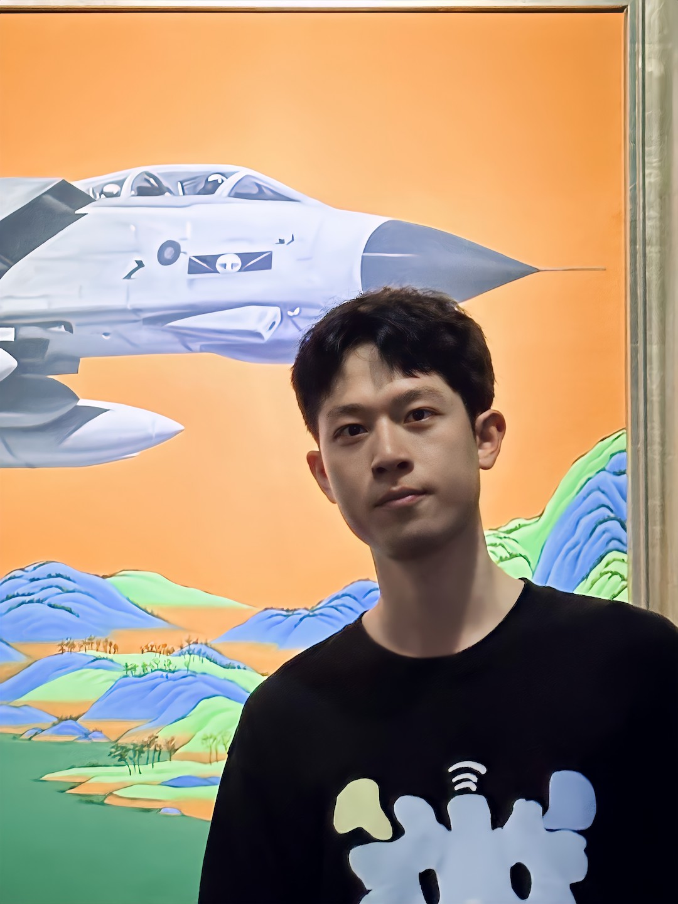
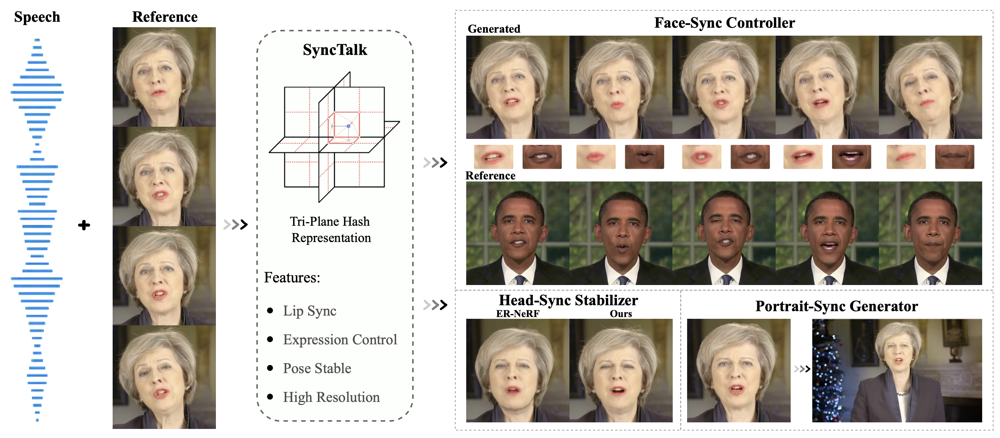

|
I am a fourth-year PhD candidate at Renmin University of China, supervised by Prof. Jun He from Renmin University of China and Prof. Hongyan Liu from Tsinghua University. My research focuses on Generative AI and Digital Humans, with a focus on audio-driven talking avatar synthesis, lip synchronization, and real-time interactive avatars.
üéì I am expected to graduate in June 2027 and actively seeking full-time positions in China and abroad. Feel free to reach out! |
 |

{kind=link}
|
2025.11
Journal
SyncTalk++ accepted to IEEE TPAMI!
2025.09
Spotlight
OmniSync accepted to NeurIPS 2025 as Spotlight!
Ranked 3rd among all NeurIPS 2025 papers üèÜ
2025.09
New
MEGADance accepted to NeurIPS 2025!
2025.06
Spotlight
GGTalker accepted to ICCV 2025 as Spotlight!
2025.04
New
Morpheus accepted to RSS 2025!
2025.03
New
DualTalk accepted to CVPR 2025!
2024.02
New
SyncTalk accepted to CVPR 2024!
|

HeyGen — AI Research Team
Research Intern · Multimodal Video Generation & Real-Time Streaming
Dec 2025 - Present

Tencent — Hunyuan Video Team
Research Intern · Text-Driven Video Action Generation
Jun 2025 - Dec 2025

Kuaishou — Kling GenAI Team
Research Intern · Universal Video Editing for AIGC
Jan 2025 - Jun 2025

Ant Group — Ant Research
Research Intern · Conversational Multi-Character Video Generation
May 2024 - Dec 2024

Pika Labs — Feature Team
Research Intern · Multimodal Video Generation
Jan 2024 - May 2024
|
|
* denotes equal contribution / co-first author |
2025 |
|

|
NeurIPS 2025 Spotlight Ziqiao Peng, Jiwen Liu, Haoxian Zhang, Xiaoqiang Liu, Songlin Tang, Pengfei Wan, Di Zhang, Hongyan Liu, Jun He |
|
|
IEEE TPAMI 2025 Ziqiao Peng, Wentao Hu, Junyuan Ma, Xiangyu Zhu, Xiaomei Zhang, Hao Zhao, Hui Tian, Jun He, Hongyan Liu, Zhaoxin Fan |

|
CVPR 2025 Ziqiao Peng, Yanbo Fan, Haoyu Wu, Xuan Wang, Hongyan Liu, Jun He, Zhaoxin Fan |
|
|
arXiv 2025 Ziqiao Peng, Yi Chen, Yifeng Ma, Guozhen Zhang, Zhiyao Sun, Zixiang Zhou, Youliang Zhang, Zhengguang Zhou, Zhaoxin Fan, Hongyan Liu, Yuan Zhou, Qinglin Lu, Jun He |

|
NeurIPS 2025 Kaixing Yang*, Xulong Tang*, Ziqiao Peng*, Yuxuan Hu, Jun He, Hongyan Liu |

|
ICCV 2025 Spotlight Wentao Hu, Shunkai Li, Ziqiao Peng, Haoxian Zhang, Fan Shi, Xiaoqiang Liu, Pengfei Wan, Di Zhang, Hui Tian |

|
arXiv 2025 Guozhen Zhang, Zixiang Zhou, Teng Hu, Ziqiao Peng, Youliang Zhang, Yi Chen, Yuan Zhou, Qinglin Lu, Limin Wang |
|
|
arXiv 2025 Zhiyao Sun*, Ziqiao Peng*, Yifeng Ma*, Yi Chen, Zhengguang Zhou, Zixiang Zhou, Guozhen Zhang, Youliang Zhang, Yuan Zhou, Qinglin Lu, Yong-Jin Liu |

|
RSS 2025 Zongzheng Zhang, Jiawen Yang, Ziqiao Peng, Meng Yang, Jianzhu Ma, Lin Cheng, Huazhe Xu, Hang Zhao, Hao Zhao |

|
arXiv 2025 Kaixing Yang*, Jiashu Zhu*, Xulong Tang*, Ziqiao Peng*, Xiangyue Zhang, Puwei Wang, Jiahong Wu, Xiangxiang Chu, Hongyan Liu, Jun He |

|
arXiv 2025 Kaixing Yang*, Xulong Tang*, Ziqiao Peng*, Xiangyue Zhang, Puwei Wang, Jun He, Hongyan Liu |

|
IROS 2025 Haoran Xu, Saining Zhang, Peishuo Li, Baijun Ye, Xiaoxue Chen, Huan-ang Gao, Jv Zheng, Xiaowei Song, Ziqiao Peng, et al. |

|
ICME 2025 Xukun Zhou, Fengxin Li, Ziqiao Peng, Kejian Wu, Jun He, Biao Qin, Zhaoxin Fan, Hongyan Liu |
2024 |
|
|

|
CVPR 2024 Ziqiao Peng, Wentao Hu, Yue Shi, Xiangyu Zhu, Xiaomei Zhang, Hao Zhao, Jun He, Hongyan Liu, Zhaoxin Fan |

|
arXiv 2024 Haoyu Wu, Ziqiao Peng, Xukun Zhou, Yunfei Cheng, Jun He, Hongyan Liu, Zhaoxin Fan |

|
arXiv 2024 Zhefan Rao, Liya Ji, Yazhou Xing, Runtao Liu, Zhaoyang Liu, Jiaxin Xie, Ziqiao Peng, Yingqing He, Qifeng Chen |
2023 |
|
|
|
ACM MM 2023 Ziqiao Peng, Yihao Luo, Yue Shi, Hao Xu, Xiangyu Zhu, Hongyan Liu, Jun He, Zhaoxin Fan |

|
ICCV 2023 Ziqiao Peng, Haoyu Wu, Zhenbo Song, Hao Xu, Xiangyu Zhu, Hongyan Liu, Jun He, Zhaoxin Fan |
| View all publications on Google Scholar |
|
Conference Reviewer: CVPR, NeurIPS, ICCV, ECCV, ACM MM, ICME, Eurographics
Journal Reviewer: IJCV, TIP, TMM, TOMM, IET Image Processing, IET Computer Vision
|